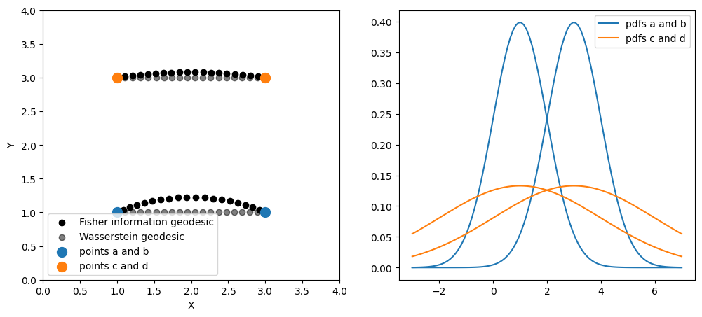

Tutorials# Practical methods# Data on Manifolds From vector spaces to manifolds Learning on Tangent Data Fréchet Mean and Tangent PCA K-Means clustering on a Riemannian Manifold  Information geometry Implement your own Riemannian Geometry Shape analysis of curves with the Square Root Velocity metric Real world applications# Shape Analysis of Cancer Cells Hand gesture classification with EMG data using Riemannian metrics Hyperbolic Embedding of Graphs and Clustering Classifying hands poses with Kendall shape spaces Computing with shapes of landmarks in Kendall shape spaces Computing with triangular shapes in Kendall framework Optimization of Sao Paulo traffic